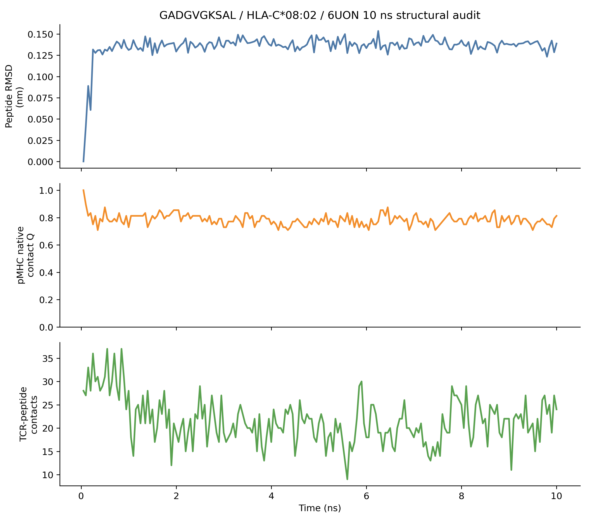
Current Verdict
MD is a structural audit layer, not immunogenicity proof. Completed 10 ns evidence is currently available for GADGVGKSAL / HLA-C*08:02; HMTEVVRHC 10 ns was still partial at the latest sync.
QC Summary
| run id | candidate | condition | total time ps | peptide rmsd final nm | peptide com drift final nm | qc status |
|---|---|---|---|---|---|---|
| prod_10ns_6VRN_1fs300K | HMTEVVRHC/HLA-A*02:01 | explicit_cuda_10ns | NA | NA | NA | missing_trajectory |
| prod_10ns_6UON_2fs300K | GADGVGKSAL/HLA-C*08:02 | explicit_cuda_10ns | 10000.000 | 0.139 | 0.660 | ok |
| 6UON_GADGVGKSAL_HLA-C0802_chainC_1p0ns | GADGVGKSAL/HLA-C*08:02 | explicit_cuda_replicate_screen | 1000.000 | 0.112 | 0.243 | ok |
| 6UON_GADGVGKSAL | GADGVGKSAL/HLA-C*08:02 | vacuum_smoke | 0.100 | 0.010 | 0.005 | ok |
| 6VRN_HMTEVVRHC | HMTEVVRHC/HLA-A*02:01 | vacuum_smoke | 0.100 | 0.005 | 0.002 | ok |
MD Evidence Scores
| run id | candidate | MD evidence score | MD evidence label | pMHC stability score | TCR recognition score | runtime fraction |
|---|---|---|---|---|---|---|
| prod_10ns_6UON_2fs300K | GADGVGKSAL/HLA-C*08:02 | 0.557 | MD_MODERATE | 0.520 | 0.440 | 1.000 |
| 6UON_GADGVGKSAL_HLA-C0802_chainC_1p0ns | GADGVGKSAL/HLA-C*08:02 | 0.650 | MD_MODERATE | 0.721 | 0.504 | 1.000 |
| 6UON_GADGVGKSAL | GADGVGKSAL/HLA-C*08:02 | 0.561 | MD_INSUFFICIENT_RUNTIME | 0.989 | 0.540 | 0.000 |
| 6VRN_HMTEVVRHC | HMTEVVRHC/HLA-A*02:01 | 0.666 | MD_INSUFFICIENT_RUNTIME | 0.988 | 1.000 | 0.000 |
Anchor Contacts
| run id | candidate | max contact occupancy | sum contact occupancy |
|---|---|---|---|
| prod_10ns_6UON_2fs300K | GADGVGKSAL/HLA-C*08:02 | 0.995 | 6.525 |
| prod_10ns_6UON_2fs300K | GADGVGKSAL/HLA-C*08:02 | 1.000 | 7.515 |
| 6UON_GADGVGKSAL_HLA-C0802_chainC_1p0ns | GADGVGKSAL/HLA-C*08:02 | 1.000 | 6.700 |
| 6UON_GADGVGKSAL_HLA-C0802_chainC_1p0ns | GADGVGKSAL/HLA-C*08:02 | 1.000 | 8.300 |
| 6UON_GADGVGKSAL | GADGVGKSAL/HLA-C*08:02 | 1.000 | 7.000 |
| 6UON_GADGVGKSAL | GADGVGKSAL/HLA-C*08:02 | 1.000 | 7.000 |
| 6VRN_HMTEVVRHC | HMTEVVRHC/HLA-A*02:01 | 1.000 | 7.200 |
| 6VRN_HMTEVVRHC | HMTEVVRHC/HLA-A*02:01 | 1.000 | 6.100 |
TCR Contact Tail
| run id | candidate | time ps | tcr peptide heavy atom contacts |
|---|---|---|---|
| prod_10ns_6UON_2fs300K | GADGVGKSAL/HLA-C*08:02 | 10000.000 | 24.000 |
| 6UON_GADGVGKSAL_HLA-C0802_chainC_1p0ns | GADGVGKSAL/HLA-C*08:02 | 1000.000 | 24.000 |
| 6UON_GADGVGKSAL | GADGVGKSAL/HLA-C*08:02 | 0.100 | 27.000 |
| 6VRN_HMTEVVRHC | HMTEVVRHC/HLA-A*02:01 | 0.100 | 73.000 |
CROSS-Neo + MD Agreement
Rows where model score and completed MD evidence both support candidate prioritization.
| row id | source dataset | peptide | hla 4digit | label | score | model name | split name | MD evidence label | MD evidence score | wetlab priority score evidence adjusted |
|---|---|---|---|---|---|---|---|---|---|---|
| CNV0_01132 | NEPdb | GADGVGKSAL | HLA-C*08:02 | 1.000 | 0.918 | source_qk_compact_gamma1 | source_heldout_NEPdb | MD_MODERATE | 0.557 | 1.631 |
| CNV0_01132 | NEPdb | GADGVGKSAL | HLA-C*08:02 | 1.000 | 0.918 | source_qk_compact_gamma1 | source_heldout_NEPdb | MD_MODERATE | 0.557 | 1.631 |
| CNV0_01132 | NEPdb | GADGVGKSAL | HLA-C*08:02 | 1.000 | 0.748 | v2_counterfactual_hgb | source_heldout_NEPdb | MD_MODERATE | 0.557 | 1.631 |
| CNV0_01132 | NEPdb | GADGVGKSAL | HLA-C*08:02 | 1.000 | 0.729 | source_prespecified_rf_qk_compact_w0.5 | source_heldout_NEPdb | MD_MODERATE | 0.557 | 1.631 |
| CNV0_01132 | NEPdb | GADGVGKSAL | HLA-C*08:02 | 1.000 | 0.714 | v2_counterfactual_lr_hla_ranknorm | source_heldout_NEPdb | MD_MODERATE | 0.557 | 1.631 |
| CNV0_01132 | NEPdb | GADGVGKSAL | HLA-C*08:02 | 1.000 | 0.701 | v2_cf_plm_rf_hla_ranknorm | source_heldout_NEPdb | MD_MODERATE | 0.557 | 1.631 |
| CNV0_01132 | NEPdb | GADGVGKSAL | HLA-C*08:02 | 1.000 | 0.682 | v2_counterfactual_lr | source_heldout_NEPdb | MD_MODERATE | 0.557 | 1.631 |
| CNV0_01132 | NEPdb | GADGVGKSAL | HLA-C*08:02 | 1.000 | 0.604 | v2_groupdro_proxy_cf_lr | source_heldout_NEPdb | MD_MODERATE | 0.557 | 1.631 |
| CNV0_01132 | NEPdb | GADGVGKSAL | HLA-C*08:02 | 1.000 | 0.604 | selective_ensemble_v2_1_conservative | source_heldout_NEPdb | MD_MODERATE | 0.557 | 1.631 |
| CNV0_01132 | NEPdb | GADGVGKSAL | HLA-C*08:02 | 1.000 | 0.604 | selective_ensemble_v2_1_topk | source_heldout_NEPdb | MD_MODERATE | 0.557 | 1.631 |
| CNV0_01132 | NEPdb | GADGVGKSAL | HLA-C*08:02 | 1.000 | 0.560 | v2_cf_plm_rf | source_heldout_NEPdb | MD_MODERATE | 0.557 | 1.631 |
| CNV0_01132 | NEPdb | GADGVGKSAL | HLA-C*08:02 | 1.000 | 0.556 | v2_class_balanced_cf_plm_hgb | source_heldout_NEPdb | MD_MODERATE | 0.557 | 1.631 |
High model score but MD is low or still insufficient.
| row id | source dataset | peptide | hla 4digit | label | score | model name | MD evidence label | md interpretation |
|---|---|---|---|---|---|---|---|---|
| CNV0_01149 | NEPdb | HMTEVVRHC | HLA-A*02:01 | 1.000 | 0.802 | v2_cf_plm_rf_hla_ranknorm | MD_INSUFFICIENT_RUNTIME | insufficient_runtime_or_missing_trajectory |
| CNV0_01150 | NEPdb | HMTEVVRHC | HLA-A*02:01 | 1.000 | 0.802 | v2_cf_plm_rf_hla_ranknorm | MD_INSUFFICIENT_RUNTIME | insufficient_runtime_or_missing_trajectory |
| CNV0_01151 | NEPdb | HMTEVVRHC | HLA-A*02:01 | 1.000 | 0.802 | v2_cf_plm_rf_hla_ranknorm | MD_INSUFFICIENT_RUNTIME | insufficient_runtime_or_missing_trajectory |
| CNV0_01152 | NEPdb | HMTEVVRHC | HLA-A*02:01 | 1.000 | 0.802 | v2_cf_plm_rf_hla_ranknorm | MD_INSUFFICIENT_RUNTIME | insufficient_runtime_or_missing_trajectory |
| CNV0_01172 | NEPdb | HMTEVVRHC | HLA-A*02:01 | 1.000 | 0.802 | v2_cf_plm_rf_hla_ranknorm | MD_INSUFFICIENT_RUNTIME | insufficient_runtime_or_missing_trajectory |
| CNV0_01176 | NEPdb | HMTEVVRHC | HLA-A*02:01 | 1.000 | 0.802 | v2_cf_plm_rf_hla_ranknorm | MD_INSUFFICIENT_RUNTIME | insufficient_runtime_or_missing_trajectory |
| CNV0_01177 | NEPdb | HMTEVVRHC | HLA-A*02:01 | 1.000 | 0.802 | v2_cf_plm_rf_hla_ranknorm | MD_INSUFFICIENT_RUNTIME | insufficient_runtime_or_missing_trajectory |
| CNV0_01183 | NEPdb | HMTEVVRHC | HLA-A*02:01 | 1.000 | 0.802 | v2_cf_plm_rf_hla_ranknorm | MD_INSUFFICIENT_RUNTIME | insufficient_runtime_or_missing_trajectory |
| CNV0_01188 | NEPdb | HMTEVVRHC | HLA-A*02:01 | 1.000 | 0.802 | v2_cf_plm_rf_hla_ranknorm | MD_INSUFFICIENT_RUNTIME | insufficient_runtime_or_missing_trajectory |
| CNV0_01189 | NEPdb | HMTEVVRHC | HLA-A*02:01 | 1.000 | 0.802 | v2_cf_plm_rf_hla_ranknorm | MD_INSUFFICIENT_RUNTIME | insufficient_runtime_or_missing_trajectory |
| CNV0_01195 | NEPdb | HMTEVVRHC | HLA-A*02:01 | 1.000 | 0.802 | v2_cf_plm_rf_hla_ranknorm | MD_INSUFFICIENT_RUNTIME | insufficient_runtime_or_missing_trajectory |
Next Simulation Batch
| priority rank | row id | peptide | hla 4digit | md tier | recommended next batch | reason |
|---|---|---|---|---|---|---|
| 1.000 | CNV0_01151 | HMTEVVRHC | HLA-A*02:01 | P0_MD_TCR_pMHC | P0: let current 10ns finish, sync DCD, rerun full analysis, then launch WT/decoy 3x10ns | highest TCR evidence and live state is stable, but trajectory-derived contacts are pending |
| 2.000 | CNV0_01132 | GADGVGKSAL | HLA-C*08:02 | P0_MD_TCR_pMHC | P0: add WT, scrambled decoy, same-HLA positive control; run 3x10ns before any 50-100ns promotion | 10ns mutant TCR-pMHC completed with moderate structural support, but no counterfactual control exists |
| 3.000 | CNV0_01388 | MAWSLGVLVALPFPL | HLA-B*40:01 | P1_MD_pMHC_bulge | P1: pMHC-only 3x10ns bulge/stability screen; no TCR-recognition claim | long class-I peptide or conformation uncertainty without paired TCR |
| 4.000 | CNV0_01384 | MAWSLGVLVALPFPL | HLA-A*02:01 | P1_MD_pMHC_bulge | P1: pMHC-only 3x10ns bulge/stability screen; no TCR-recognition claim | long class-I peptide or conformation uncertainty without paired TCR |
| 5.000 | CNV0_01146 | FSLVFLVYSVFKNNV | HLA-A*11:01 | P1_MD_pMHC_bulge | P1: pMHC-only 3x10ns bulge/stability screen; no TCR-recognition claim | long class-I peptide or conformation uncertainty without paired TCR |
| 6.000 | CNV0_01163 | MAWSLGVLVALPFPL | HLA-B*18:01 | P1_MD_pMHC_bulge | P1: pMHC-only 3x10ns bulge/stability screen; no TCR-recognition claim | long class-I peptide or conformation uncertainty without paired TCR |
| 7.000 | CNV0_01164 | MAWSLGVLVALPFPL | HLA-A*25:01 | P1_MD_pMHC_bulge | P1: pMHC-only 3x10ns bulge/stability screen; no TCR-recognition claim | long class-I peptide or conformation uncertainty without paired TCR |
| 8.000 | CNV0_01276 | MSSLAATTFHWKKCR | HLA-B*07:02 | P1_MD_pMHC_bulge | P1: pMHC-only 3x10ns bulge/stability screen; no TCR-recognition claim | long class-I peptide or conformation uncertainty without paired TCR |
| 9.000 | CNV0_00930 | MSSLAATTFHWKKCR | HLA-A*68:01 | P1_MD_pMHC_bulge | P1: pMHC-only 3x10ns bulge/stability screen; no TCR-recognition claim | long class-I peptide or conformation uncertainty without paired TCR |
| 10.000 | CNV0_00931 | MSSLAATTFHWKKCR | HLA-B*35:03 | P1_MD_pMHC_bulge | P1: pMHC-only 3x10ns bulge/stability screen; no TCR-recognition claim | long class-I peptide or conformation uncertainty without paired TCR |
| 11.000 | CNV0_01391 | FSLVFLVYSVFKNNV | HLA-B*38:01 | P1_MD_pMHC_bulge | P1: pMHC-only 3x10ns bulge/stability screen; no TCR-recognition claim | long class-I peptide or conformation uncertainty without paired TCR |
| 12.000 | CNV0_01144 | FSLVFLVYSVFKNNV | HLA-B*52:01 | P1_MD_pMHC_bulge | P1: pMHC-only 3x10ns bulge/stability screen; no TCR-recognition claim | long class-I peptide or conformation uncertainty without paired TCR |
Counterfactual Controls
WT rows are blocked or manual-confirmation required unless a registry WT peptide is available. Decoys preserve P2 and C-terminal anchors.
| batch id | priority rank | peptide | hla 4digit | control type | complex kind | sequence | sequence status | readiness | blocked by |
|---|---|---|---|---|---|---|---|---|---|
| P01_HMTEVVRHC_HLA_A_02_01_mutant_pmhc_3x10ns | 1.000 | HMTEVVRHC | HLA-A*02:01 | mutant | pMHC | HMTEVVRHC | observed_mutant_or_candidate_peptide | ready_template_or_structure_generation_needed | NA |
| P01_HMTEVVRHC_HLA_A_02_01_mutant_tcr_pmhc_3x10ns | 1.000 | HMTEVVRHC | HLA-A*02:01 | mutant | TCR-pMHC | HMTEVVRHC | observed_mutant_or_candidate_peptide | ready_existing_tcr_pmhc_template | NA |
| P01_HMTEVVRHC_HLA_A_02_01_wt_pMHC_3x10ns | 1.000 | HMTEVVRHC | HLA-A*02:01 | wildtype | pMHC | NA | missing_wt_sequence_blocked | blocked | missing_wt_sequence |
| P01_HMTEVVRHC_HLA_A_02_01_wt_TCR_pMHC_3x10ns | 1.000 | HMTEVVRHC | HLA-A*02:01 | wildtype | TCR-pMHC | NA | missing_wt_sequence_blocked | blocked | missing_wt_sequence |
| P01_HMTEVVRHC_HLA_A_02_01_anchor_preserved_decoy_pMHC_3x10ns | 1.000 | HMTEVVRHC | HLA-A*02:01 | anchor_preserved_scrambled_decoy | pMHC | HMTHRVVEC | algorithmic_decoy_preserving_p2_and_cterminal_anchor | structure_generation_required | prepare_decoy_structure_from_template |
| P01_HMTEVVRHC_HLA_A_02_01_anchor_preserved_decoy_TCR_pMHC_3x10ns | 1.000 | HMTEVVRHC | HLA-A*02:01 | anchor_preserved_scrambled_decoy | TCR-pMHC | HMTHRVVEC | algorithmic_decoy_preserving_p2_and_cterminal_anchor | structure_generation_required | prepare_decoy_structure_from_template |
| P01_HMTEVVRHC_HLA_A_02_01_same_hla_positive_control_pMHC_3x10ns | 1.000 | HMTEVVRHC | HLA-A*02:01 | same_or_similar_hla_positive_control | pMHC | ELAGIGILTV | selected_positive_control_exact_hla; tcr_row=TCRREG_0537478; pdb=5nqk | ready_TCR_pMHC_positive_control | NA |
| P01_HMTEVVRHC_HLA_A_02_01_same_hla_positive_control_TCR_pMHC_3x10ns | 1.000 | HMTEVVRHC | HLA-A*02:01 | same_or_similar_hla_positive_control | TCR-pMHC | ELAGIGILTV | selected_positive_control_exact_hla; tcr_row=TCRREG_0537478; pdb=5nqk | ready_TCR_pMHC_positive_control | NA |
| P02_GADGVGKSAL_HLA_C_08_02_mutant_pmhc_3x10ns | 2.000 | GADGVGKSAL | HLA-C*08:02 | mutant | pMHC | GADGVGKSAL | observed_mutant_or_candidate_peptide | ready_template_or_structure_generation_needed | NA |
| P02_GADGVGKSAL_HLA_C_08_02_mutant_tcr_pmhc_3x10ns | 2.000 | GADGVGKSAL | HLA-C*08:02 | mutant | TCR-pMHC | GADGVGKSAL | observed_mutant_or_candidate_peptide | ready_existing_tcr_pmhc_template | NA |
| P02_GADGVGKSAL_HLA_C_08_02_wt_pMHC_3x10ns | 2.000 | GADGVGKSAL | HLA-C*08:02 | wildtype | pMHC | GAGGVGKSAL | inferred_kras_g12d_like_requires_manual_confirmation | manual_confirmation_required | confirm_wt_sequence_before_simulation |
| P02_GADGVGKSAL_HLA_C_08_02_wt_TCR_pMHC_3x10ns | 2.000 | GADGVGKSAL | HLA-C*08:02 | wildtype | TCR-pMHC | GAGGVGKSAL | inferred_kras_g12d_like_requires_manual_confirmation | manual_confirmation_required | confirm_wt_sequence_before_simulation |
| P02_GADGVGKSAL_HLA_C_08_02_anchor_preserved_decoy_pMHC_3x10ns | 2.000 | GADGVGKSAL | HLA-C*08:02 | anchor_preserved_scrambled_decoy | pMHC | GASGVKGADL | algorithmic_decoy_preserving_p2_and_cterminal_anchor | structure_generation_required | prepare_decoy_structure_from_template |
| P02_GADGVGKSAL_HLA_C_08_02_anchor_preserved_decoy_TCR_pMHC_3x10ns | 2.000 | GADGVGKSAL | HLA-C*08:02 | anchor_preserved_scrambled_decoy | TCR-pMHC | GASGVKGADL | algorithmic_decoy_preserving_p2_and_cterminal_anchor | structure_generation_required | prepare_decoy_structure_from_template |
| P02_GADGVGKSAL_HLA_C_08_02_same_hla_positive_control_pMHC_3x10ns | 2.000 | GADGVGKSAL | HLA-C*08:02 | same_or_similar_hla_positive_control | pMHC | GADGVGKSA | selected_positive_control_exact_hla; tcr_row=TCRREG_0351706; pdb=6ULR | incomplete_positive_control | NA |
| P02_GADGVGKSAL_HLA_C_08_02_same_hla_positive_control_TCR_pMHC_3x10ns | 2.000 | GADGVGKSAL | HLA-C*08:02 | same_or_similar_hla_positive_control | TCR-pMHC | FGDVGSTLF | selected_positive_control_exact_hla; tcr_row=TCRREG_0053410; pdb=nan | structure_generation_required | prepare_positive_control_structure |
| P03_MAWSLGVLVALPFPL_HLA_B_40_01_mutant_pmhc_3x10ns | 3.000 | MAWSLGVLVALPFPL | HLA-B*40:01 | mutant | pMHC | MAWSLGVLVALPFPL | observed_mutant_or_candidate_peptide | ready_template_or_structure_generation_needed | requires_pmhc_structure_generation |
| P03_MAWSLGVLVALPFPL_HLA_B_40_01_wt_pMHC_3x10ns | 3.000 | MAWSLGVLVALPFPL | HLA-B*40:01 | wildtype | pMHC | NA | missing_wt_sequence_blocked | blocked | missing_wt_sequence |
Positive Control PDBs
These are analysis sanity controls only, not cancer specificity evidence.
| target peptide | control peptide | control hla 4digit | pdb id | status | selected chains | contacts tcr peptide initial | extracted pdb |
|---|---|---|---|---|---|---|---|
| HMTEVVRHC | ELAGIGILTV | HLA-A*02:01 | 5NQK | ready_TCR_pMHC_positive_control | A|B|H|L|P | 40.000 | /home/seungho/personal/THCA_data_analysis/project/results/cross_neo_md_audit_2026_05_10/counterfactual_design/positive_control_pdbs/extracted/5NQK_ELAGIGILTV_HLA-A0201_chainP.pdb |
| HMTEVVRHC | AAGIGILTV | HLA-A*02:01 | 3QDJ | ready_TCR_pMHC_positive_control | A|B|C|D|E | 31.000 | /home/seungho/personal/THCA_data_analysis/project/results/cross_neo_md_audit_2026_05_10/counterfactual_design/positive_control_pdbs/extracted/3QDJ_AAGIGILTV_HLA-A0201_chainC.pdb |
| HMTEVVRHC | ALGIGILTV | HLA-A*02:01 | 4EUP | ready_TCR_pMHC_positive_control | A|B|C|I|J | 62.000 | /home/seungho/personal/THCA_data_analysis/project/results/cross_neo_md_audit_2026_05_10/counterfactual_design/positive_control_pdbs/extracted/4EUP_ALGIGILTV_HLA-A0201_chainC.pdb |
| GADGVGKSAL | GADGVGKSA | HLA-C*08:02 | 6ULR | incomplete_positive_control | A|B|C | 0.000 | /home/seungho/personal/THCA_data_analysis/project/results/cross_neo_md_audit_2026_05_10/counterfactual_design/positive_control_pdbs/extracted/6ULR_GADGVGKSA_HLA-C0802_chainC.pdb |
OpenMM-Ready Structure Jobs
Command templates are generated, but no new MD runs are launched from this dossier.
| prep id | batch id | peptide | hla 4digit | control type | complex kind | sequence | structure route | input template pdb |
|---|---|---|---|---|---|---|---|---|
| MDPREP_0000 | P01_HMTEVVRHC_HLA_A_02_01_mutant_pmhc_3x10ns | HMTEVVRHC | HLA-A*02:01 | mutant | pMHC | HMTEVVRHC | openmm_prepare_existing_candidate_template | /home/seungho/personal/THCA_data_analysis/project/results/cross_neo_v2_sota_sprint_2026_05_09/tcr_extension/md_escalation/p0_structures/pilot_complexes/6VRN_HMTEVVRHC_HLA-A0201_chainP.pdb |
| MDPREP_0001 | P01_HMTEVVRHC_HLA_A_02_01_mutant_tcr_pmhc_3x10ns | HMTEVVRHC | HLA-A*02:01 | mutant | TCR-pMHC | HMTEVVRHC | openmm_prepare_existing_candidate_template | /home/seungho/personal/THCA_data_analysis/project/results/cross_neo_v2_sota_sprint_2026_05_09/tcr_extension/md_escalation/p0_structures/pilot_complexes/6VRN_HMTEVVRHC_HLA-A0201_chainP.pdb |
| MDPREP_0006 | P01_HMTEVVRHC_HLA_A_02_01_same_hla_positive_control_pMHC_3x10ns | HMTEVVRHC | HLA-A*02:01 | same_or_similar_hla_positive_control | pMHC | ELAGIGILTV | openmm_prepare_existing_extracted_positive_control | /home/seungho/personal/THCA_data_analysis/project/results/cross_neo_md_audit_2026_05_10/counterfactual_design/positive_control_pdbs/extracted/5NQK_ELAGIGILTV_HLA-A0201_chainP.pdb |
| MDPREP_0007 | P01_HMTEVVRHC_HLA_A_02_01_same_hla_positive_control_TCR_pMHC_3x10ns | HMTEVVRHC | HLA-A*02:01 | same_or_similar_hla_positive_control | TCR-pMHC | ELAGIGILTV | openmm_prepare_existing_extracted_positive_control | /home/seungho/personal/THCA_data_analysis/project/results/cross_neo_md_audit_2026_05_10/counterfactual_design/positive_control_pdbs/extracted/5NQK_ELAGIGILTV_HLA-A0201_chainP.pdb |
| MDPREP_0008 | P02_GADGVGKSAL_HLA_C_08_02_mutant_pmhc_3x10ns | GADGVGKSAL | HLA-C*08:02 | mutant | pMHC | GADGVGKSAL | openmm_prepare_existing_candidate_template | /home/seungho/personal/THCA_data_analysis/project/results/cross_neo_v2_sota_sprint_2026_05_09/tcr_extension/md_escalation/p0_structures/pilot_complexes/6UON_GADGVGKSAL_HLA-C0802_chainF.pdb |
| MDPREP_0009 | P02_GADGVGKSAL_HLA_C_08_02_mutant_tcr_pmhc_3x10ns | GADGVGKSAL | HLA-C*08:02 | mutant | TCR-pMHC | GADGVGKSAL | openmm_prepare_existing_candidate_template | /home/seungho/personal/THCA_data_analysis/project/results/cross_neo_v2_sota_sprint_2026_05_09/tcr_extension/md_escalation/p0_structures/pilot_complexes/6UON_GADGVGKSAL_HLA-C0802_chainF.pdb |
| MDPREP_0014 | P02_GADGVGKSAL_HLA_C_08_02_same_hla_positive_control_pMHC_3x10ns | GADGVGKSAL | HLA-C*08:02 | same_or_similar_hla_positive_control | pMHC | GADGVGKSA | openmm_prepare_existing_template | /home/seungho/personal/THCA_data_analysis/project/results/cross_neo_md_audit_2026_05_10/counterfactual_design/positive_control_pdbs/extracted/6ULR_GADGVGKSA_HLA-C0802_chainC.pdb |
Ultra Wetlab Priority
This is a conservative recommendation score, not an immunogenicity probability.
| row id | peptide | hla 4digit | recommendation tier | ultra priority score | confidence score | model evidence score | tcr resource score | md structural score | control readiness score | claim risk penalty | why |
|---|---|---|---|---|---|---|---|---|---|---|---|
| CNV0_01132 | GADGVGKSAL | HLA-C*08:02 | TIER_A_EXPERIMENT_NOW_WITH_CONTROLS | 0.615 | 1.000 | 0.855 | 0.584 | 0.557 | 0.533 | 0.050 | completed MD support plus exact/paired TCR evidence; still needs WT/decoy-aware assay controls |
| CNV0_01151 | HMTEVVRHC | HLA-A*02:01 | TIER_A_PENDING_MD_COMPLETION_THEN_EXPERIMENT | 0.428 | 0.750 | 0.787 | 0.675 | 0.099 | 0.478 | 0.130 | strong TCR/resource evidence and active stable MD; wait for completed trajectory before final ranking |
| CNV0_02565 | LLSTAEAAV | HLA-A*02:01 | TIER_D_TCR_OR_WT_CURATION_FIRST | 0.240 | 0.550 | 0.976 | 0.744 | 0.000 | 0.000 | 0.310 | candidate needs paired TCR, WT, or structure curation before wetlab escalation |
| CNV0_01079 | AQQITKTEV | HLA-B*52:01 | TIER_D_TCR_OR_WT_CURATION_FIRST | 0.154 | 0.000 | 0.898 | 0.000 | 0.000 | 0.000 | 0.160 | candidate needs paired TCR, WT, or structure curation before wetlab escalation |
| CNV0_01144 | FSLVFLVYSVFKNNV | HLA-B*52:01 | TIER_D_TCR_OR_WT_CURATION_FIRST | 0.139 | 0.000 | 0.758 | 0.030 | 0.000 | 0.300 | 0.180 | candidate needs paired TCR, WT, or structure curation before wetlab escalation |
| CNV0_01391 | FSLVFLVYSVFKNNV | HLA-B*38:01 | TIER_D_TCR_OR_WT_CURATION_FIRST | 0.138 | 0.000 | 0.757 | 0.030 | 0.000 | 0.300 | 0.180 | candidate needs paired TCR, WT, or structure curation before wetlab escalation |
| CNV0_01011 | SEHEGSGPEL | HLA-B*38:01 | TIER_D_TCR_OR_WT_CURATION_FIRST | 0.135 | 0.000 | 0.844 | 0.000 | 0.000 | 0.000 | 0.160 | candidate needs paired TCR, WT, or structure curation before wetlab escalation |
| CNV0_01146 | FSLVFLVYSVFKNNV | HLA-A*11:01 | TIER_D_TCR_OR_WT_CURATION_FIRST | 0.129 | 0.000 | 0.731 | 0.030 | 0.000 | 0.300 | 0.180 | candidate needs paired TCR, WT, or structure curation before wetlab escalation |
| CNV0_00931 | MSSLAATTFHWKKCR | HLA-B*35:03 | TIER_D_TCR_OR_WT_CURATION_FIRST | 0.129 | 0.000 | 0.730 | 0.030 | 0.000 | 0.300 | 0.180 | candidate needs paired TCR, WT, or structure curation before wetlab escalation |
| CNV0_01276 | MSSLAATTFHWKKCR | HLA-B*07:02 | TIER_D_TCR_OR_WT_CURATION_FIRST | 0.128 | 0.000 | 0.728 | 0.030 | 0.000 | 0.300 | 0.180 | candidate needs paired TCR, WT, or structure curation before wetlab escalation |
| CNV0_00930 | MSSLAATTFHWKKCR | HLA-A*68:01 | TIER_D_TCR_OR_WT_CURATION_FIRST | 0.128 | 0.000 | 0.728 | 0.030 | 0.000 | 0.300 | 0.180 | candidate needs paired TCR, WT, or structure curation before wetlab escalation |
| CNV0_01164 | MAWSLGVLVALPFPL | HLA-A*25:01 | TIER_D_TCR_OR_WT_CURATION_FIRST | 0.122 | 0.000 | 0.709 | 0.030 | 0.000 | 0.300 | 0.180 | candidate needs paired TCR, WT, or structure curation before wetlab escalation |
| CNV0_01163 | MAWSLGVLVALPFPL | HLA-B*18:01 | TIER_D_TCR_OR_WT_CURATION_FIRST | 0.119 | 0.000 | 0.700 | 0.030 | 0.000 | 0.300 | 0.180 | candidate needs paired TCR, WT, or structure curation before wetlab escalation |
| CNV0_01388 | MAWSLGVLVALPFPL | HLA-B*40:01 | TIER_D_TCR_OR_WT_CURATION_FIRST | 0.114 | 0.000 | 0.688 | 0.030 | 0.000 | 0.300 | 0.180 | candidate needs paired TCR, WT, or structure curation before wetlab escalation |
| CNV0_01384 | MAWSLGVLVALPFPL | HLA-A*02:01 | TIER_D_TCR_OR_WT_CURATION_FIRST | 0.114 | 0.000 | 0.688 | 0.030 | 0.000 | 0.300 | 0.180 | candidate needs paired TCR, WT, or structure curation before wetlab escalation |
Small-Dataset Uncertainty Funnel
Bayesian posterior and dropout/weight perturbation are used to cull weak or unstable candidates, not to certify positives.
| decision | n |
|---|---|
| HOLD_FOR_MORE_EVIDENCE | 518.000 |
| REVIEW_FOR_TCR_WT_CURATION | 118.000 |
| CULL_LOW_ACTIONABILITY | 6.000 |
| CULL_LOW_POSTERIOR_NO_TCR_NO_MD | 5.000 |
| SURVIVE_PENDING_MD_COMPLETION | 1.000 |
| SURVIVE_EXPERIMENT_NOW_WITH_CONTROLS | 1.000 |
| row id | peptide | hla 4digit | funnel decision | funnel priority score | bayes mean | bayes q05 | bayes q95 | perturb median | perturb width 90 | dropout sensitivity | funnel reason |
|---|---|---|---|---|---|---|---|---|---|---|---|
| CNV0_01132 | GADGVGKSAL | HLA-C*08:02 | SURVIVE_EXPERIMENT_NOW_WITH_CONTROLS | 0.639 | 0.559 | 0.368 | 0.742 | 0.667 | 0.191 | 0.018 | tier-A integrated TCR/MD/control evidence; still not immunogenicity proof |
| CNV0_01151 | HMTEVVRHC | HLA-A*02:01 | SURVIVE_PENDING_MD_COMPLETION | 0.314 | 0.409 | 0.242 | 0.586 | 0.443 | 0.119 | 0.005 | strong TCR evidence and active MD; wait for full trajectory before final wetlab order |
| CNV0_02565 | LLSTAEAAV | HLA-A*02:01 | REVIEW_FOR_TCR_WT_CURATION | 0.488 | 0.617 | 0.500 | 0.729 | 0.657 | 0.071 | 0.003 | model/TCR signal survives but needs WT, structure, or paired TCR curation |
| CNV0_01251 | YLDELIRNT | HLA-A*02:01 | REVIEW_FOR_TCR_WT_CURATION | 0.398 | 0.654 | 0.465 | 0.823 | 0.808 | 0.168 | 0.008 | model/TCR signal survives but needs WT, structure, or paired TCR curation |
| CNV0_02450 | KELEGILLL | HLA-B*44:03 | REVIEW_FOR_TCR_WT_CURATION | 0.390 | 0.717 | 0.603 | 0.821 | 0.770 | 0.076 | 0.003 | model/TCR signal survives but needs WT, structure, or paired TCR curation |
| CNV0_01074 | QTNPVTLQY | HLA-A*29:02 | REVIEW_FOR_TCR_WT_CURATION | 0.387 | 0.641 | 0.450 | 0.813 | 0.800 | 0.223 | 0.016 | model/TCR signal survives but needs WT, structure, or paired TCR curation |
| CNV0_01147 | EKRKRETDDEGENE | HLA-C*07:02 | REVIEW_FOR_TCR_WT_CURATION | 0.382 | 0.718 | 0.534 | 0.874 | 0.910 | 0.122 | 0.005 | model/TCR signal survives but needs WT, structure, or paired TCR curation |
| CNV0_02452 | LLDGFLATV | HLA-A*02:01 | REVIEW_FOR_TCR_WT_CURATION | 0.378 | 0.703 | 0.590 | 0.806 | 0.752 | 0.075 | 0.003 | model/TCR signal survives but needs WT, structure, or paired TCR curation |
| CNV0_01382 | PVFTHENIQGGGVP | HLA-C*16:01 | REVIEW_FOR_TCR_WT_CURATION | 0.377 | 0.699 | 0.512 | 0.859 | 0.881 | 0.141 | 0.007 | model/TCR signal survives but needs WT, structure, or paired TCR curation |
| CNV0_01478 | KFEEQNRAESECLDG | HLA-C*07:02 | REVIEW_FOR_TCR_WT_CURATION | 0.376 | 0.697 | 0.511 | 0.858 | 0.875 | 0.132 | 0.011 | model/TCR signal survives but needs WT, structure, or paired TCR curation |
| CNV0_00933 | EKRKRETDDEGENE | HLA-A*03:01 | REVIEW_FOR_TCR_WT_CURATION | 0.376 | 0.697 | 0.510 | 0.858 | 0.878 | 0.126 | 0.011 | model/TCR signal survives but needs WT, structure, or paired TCR curation |
| CNV0_01023 | FLDEFMEGV | HLA-A*02:01 | REVIEW_FOR_TCR_WT_CURATION | 0.376 | 0.566 | 0.375 | 0.749 | 0.678 | 0.175 | 0.009 | model/TCR signal survives but needs WT, structure, or paired TCR curation |
| CNV0_02398 | KLILWRGLK | HLA-A*03:01 | REVIEW_FOR_TCR_WT_CURATION | 0.376 | 0.648 | 0.532 | 0.758 | 0.693 | 0.070 | 0.003 | model/TCR signal survives but needs WT, structure, or paired TCR curation |
| CNV0_01118 | GADGVGKSA | HLA-C*08:02 | REVIEW_FOR_TCR_WT_CURATION | 0.374 | 0.561 | 0.368 | 0.745 | 0.674 | 0.222 | 0.026 | model/TCR signal survives but needs WT, structure, or paired TCR curation |
| CNV0_01154 | DAMDAKKRRQQNV | HLA-C*01:02 | REVIEW_FOR_TCR_WT_CURATION | 0.374 | 0.688 | 0.501 | 0.851 | 0.865 | 0.150 | 0.016 | model/TCR signal survives but needs WT, structure, or paired TCR curation |
DL-First Candidate Funnel
Cheap model ensemble and uncertainty gates run before TCR rescue, structure, and MD. TCR-discordant high-model rows are audit/control candidates, not positives.
| stage | n |
|---|---|
| 00_all_candidates | 649.000 |
| 01_supported_peptide_length | 491.000 |
| 02_main_dl_broad_pass | 280.000 |
| 03_bayesian_dropout_pass | 97.000 |
| 04_robust_main_dl_pass | 97.000 |
| 05_source_compatible_tcr_after_dl | 90.000 |
| 06_paired_tcr_after_dl | 9.000 |
| 07_tcr_branch_supported_after_dl | 18.000 |
| 08_tcr_rescue_reviews | 1.000 |
| 09_md_escalation_after_cheap_gates | 2.000 |
| 10_wetlab_shortlist_after_dl | 1.000 |
| decision | n |
|---|---|
| DL_CULL_LOW_MAIN_MODEL_SCORE | 211.000 |
| DL_CULL_UNCERTAIN_OR_LOW_POSTERIOR | 182.000 |
| DL_CULL_UNSUPPORTED_PEPTIDE_LENGTH | 158.000 |
| DL_TCR_DISCORDANT_AUDIT_NOT_POSITIVE | 72.000 |
| DL_PRIMARY_SURVIVOR_TCR_CONTEXT_ONLY | 17.000 |
| DL_PRIMARY_SURVIVOR_MODEL_ONLY | 7.000 |
| DL_PRIMARY_SURVIVOR_WITH_PAIRED_TCR | 1.000 |
| TCR_RESCUE_REVIEW_AFTER_WEAK_MAIN_DL | 1.000 |
| row id | peptide | hla 4digit | dl first decision | next action | dl first priority score | main dl score | bayes mean | bayes q05 | bayes q95 | perturb prob gt 050 | tcr augmented score mean | paired tcr evidence count | md label |
|---|---|---|---|---|---|---|---|---|---|---|---|---|---|
| CNV0_01132 | GADGVGKSAL | HLA-C*08:02 | DL_PRIMARY_SURVIVOR_WITH_PAIRED_TCR | prepare_wt_decoy_structure_then_md_if_controls_ready | 0.864 | 0.770 | 0.559 | 0.368 | 0.742 | 0.988 | 0.960 | 13.000 | MD_MODERATE |
| CNV0_01151 | HMTEVVRHC | HLA-A*02:01 | TCR_RESCUE_REVIEW_AFTER_WEAK_MAIN_DL | curate_tcr_wt_then_structure_before_md | 0.564 | 0.467 | 0.409 | 0.242 | 0.586 | 0.042 | 0.983 | 18.000 | MD_INSUFFICIENT_RUNTIME |
| CNV0_02452 | LLDGFLATV | HLA-A*02:01 | DL_PRIMARY_SURVIVOR_TCR_CONTEXT_ONLY | curate_paired_tcr_or_template_before_md | 0.790 | 0.883 | 0.703 | 0.590 | 0.806 | 1.000 | 0.891 | 0.000 | NA |
| CNV0_02450 | KELEGILLL | HLA-B*44:03 | DL_PRIMARY_SURVIVOR_TCR_CONTEXT_ONLY | curate_paired_tcr_or_template_before_md | 0.790 | 0.874 | 0.717 | 0.603 | 0.821 | 1.000 | 0.792 | 0.000 | NA |
| CNV0_02556 | SLFTLHVLGL | HLA-A*02:01 | DL_PRIMARY_SURVIVOR_TCR_CONTEXT_ONLY | curate_paired_tcr_or_template_before_md | 0.770 | 0.841 | 0.683 | 0.569 | 0.789 | 1.000 | 0.999 | 0.000 | NA |
| CNV0_02398 | KLILWRGLK | HLA-A*03:01 | DL_PRIMARY_SURVIVOR_TCR_CONTEXT_ONLY | curate_paired_tcr_or_template_before_md | 0.748 | 0.803 | 0.648 | 0.532 | 0.758 | 1.000 | 0.985 | 0.000 | NA |
| CNV0_02416 | VLLRALPVL | HLA-A*02:01 | DL_PRIMARY_SURVIVOR_TCR_CONTEXT_ONLY | curate_paired_tcr_or_template_before_md | 0.739 | 0.789 | 0.632 | 0.515 | 0.743 | 1.000 | 0.891 | 0.000 | NA |
| CNV0_02448 | ILDKVLVHL | HLA-A*02:01 | DL_PRIMARY_SURVIVOR_TCR_CONTEXT_ONLY | curate_paired_tcr_or_template_before_md | 0.734 | 0.773 | 0.637 | 0.520 | 0.747 | 1.000 | 0.962 | 0.000 | NA |
| CNV0_02442 | ETVSEQSNV | HLA-A*68:01 | DL_PRIMARY_SURVIVOR_TCR_CONTEXT_ONLY | curate_paired_tcr_or_template_before_md | 0.719 | 0.742 | 0.623 | 0.502 | 0.737 | 1.000 | 0.890 | 0.000 | NA |
| CNV0_01284 | ITDVDELPI | HLA-A*01:01 | DL_PRIMARY_SURVIVOR_TCR_CONTEXT_ONLY | curate_paired_tcr_or_template_before_md | 0.717 | 0.804 | 0.535 | 0.343 | 0.722 | 0.959 | 0.999 | 0.000 | NA |
| CNV0_02712 | DKESEEEVS | HLA-C*12:03 | DL_PRIMARY_SURVIVOR_TCR_CONTEXT_ONLY | curate_paired_tcr_or_template_before_md | 0.714 | 0.730 | 0.623 | 0.504 | 0.737 | 1.000 | 0.846 | 0.000 | NA |
| CNV0_02559 | FLDPDIGGL | HLA-A*02:01 | DL_PRIMARY_SURVIVOR_TCR_CONTEXT_ONLY | curate_paired_tcr_or_template_before_md | 0.714 | 0.737 | 0.610 | 0.492 | 0.723 | 1.000 | 0.936 | 0.000 | NA |
| CNV0_02424 | LADEAEVYL | HLA-A*02:01 | DL_PRIMARY_SURVIVOR_TCR_CONTEXT_ONLY | curate_paired_tcr_or_template_before_md | 0.714 | 0.738 | 0.605 | 0.487 | 0.718 | 1.000 | 0.737 | 0.000 | NA |
| CNV0_02572 | TTYSPIGEK | HLA-A*03:01 | DL_PRIMARY_SURVIVOR_TCR_CONTEXT_ONLY | curate_paired_tcr_or_template_before_md | 0.694 | 0.700 | 0.584 | 0.466 | 0.699 | 1.000 | 0.595 | 0.000 | NA |
| CNV0_01218 | ETWRETGIF | HLA-A*26:01 | DL_PRIMARY_SURVIVOR_TCR_CONTEXT_ONLY | curate_paired_tcr_or_template_before_md | 0.680 | 0.719 | 0.517 | 0.326 | 0.706 | 0.958 | 0.955 | 0.000 | NA |
| CNV0_02478 | YVDFREYEYY | HLA-A*01:01 | DL_PRIMARY_SURVIVOR_TCR_CONTEXT_ONLY | curate_paired_tcr_or_template_before_md | 0.673 | 0.661 | 0.552 | 0.433 | 0.668 | 0.999 | 0.839 | 0.000 | NA |
| CNV0_01202 | GVYPMPGTQK | HLA-A*03:01 | DL_PRIMARY_SURVIVOR_TCR_CONTEXT_ONLY | curate_paired_tcr_or_template_before_md | 0.661 | 0.651 | 0.524 | 0.334 | 0.711 | 0.989 | 0.963 | 0.000 | NA |
| CNV0_02592 | KRTNVGILK | HLA-B*27:05 | DL_PRIMARY_SURVIVOR_TCR_CONTEXT_ONLY | curate_paired_tcr_or_template_before_md | 0.649 | 0.621 | 0.523 | 0.404 | 0.640 | 0.987 | 0.517 | 0.000 | NA |
Figure Gallery
{kind=link}
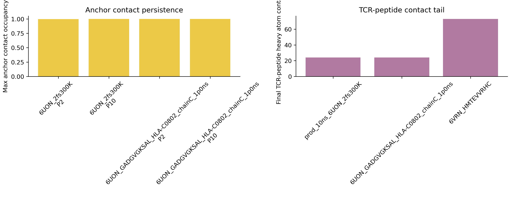
fig_md11_anchor_tcr_contact_summary
PNG{kind=link}
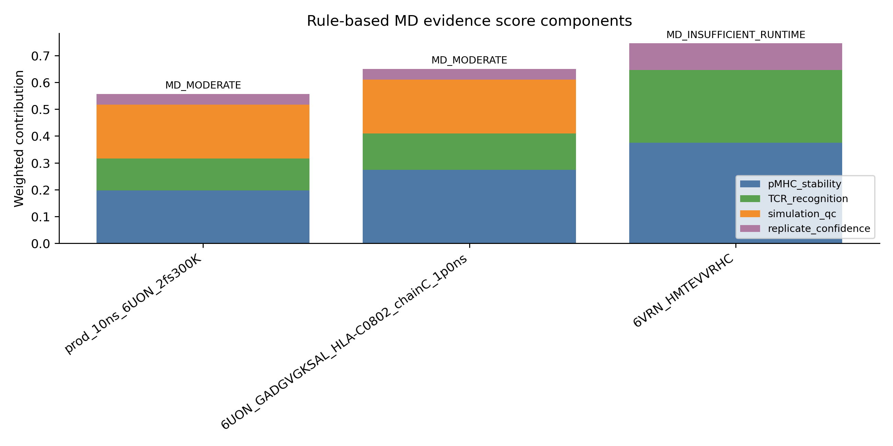
fig_md12_evidence_score_components
PNG{kind=link}
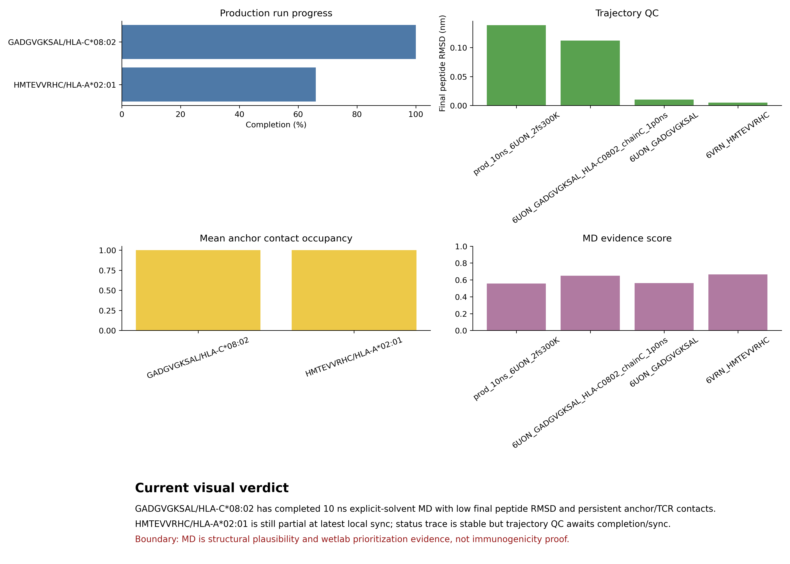
fig_md13_visual_summary_dashboard
PNG{kind=link}
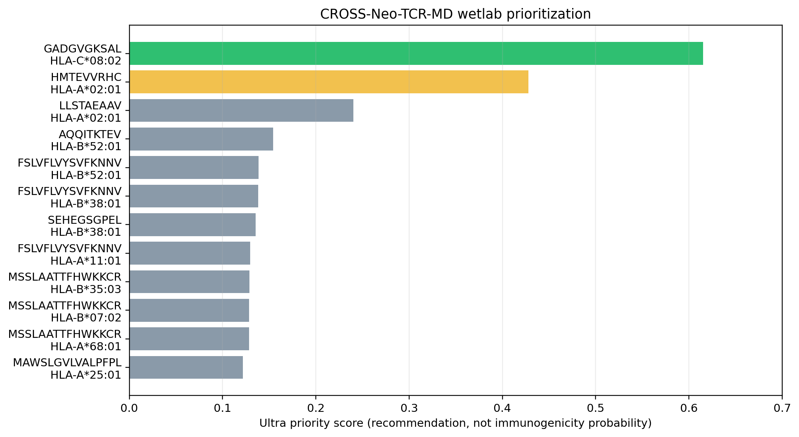
fig_md14_ultra_priority_ranking
PNG{kind=link}
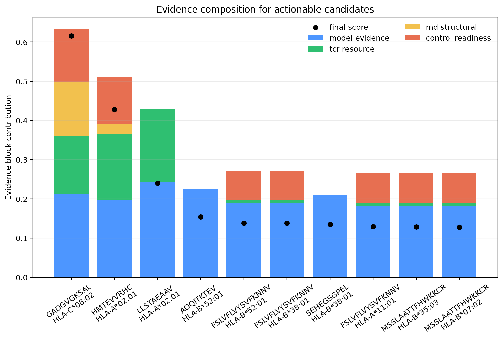
fig_md15_ultra_priority_evidence_blocks
PNG{kind=link}

fig_md16_small_dataset_uncertainty_funnel
PNG
fig_md17_bayesian_dropout_uncertainty
PNG
fig_md18_dl_first_candidate_funnel
PNG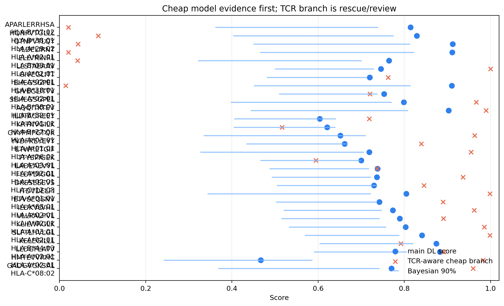
fig_md19_dl_tcr_rescue_uncertainty
PNG{kind=link}
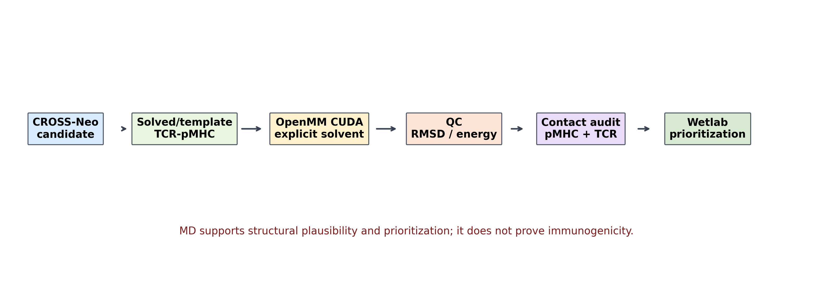
fig_md1_pipeline
PNG{kind=link}

fig_md2_peptide_rmsd
PNG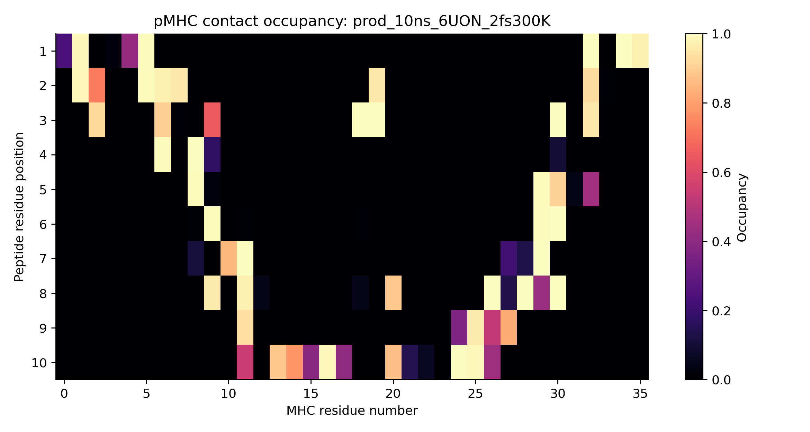
fig_md3_pmhc_contact_heatmap
PNG{kind=link}

fig_md4_tcr_peptide_contact_heatmap
PNG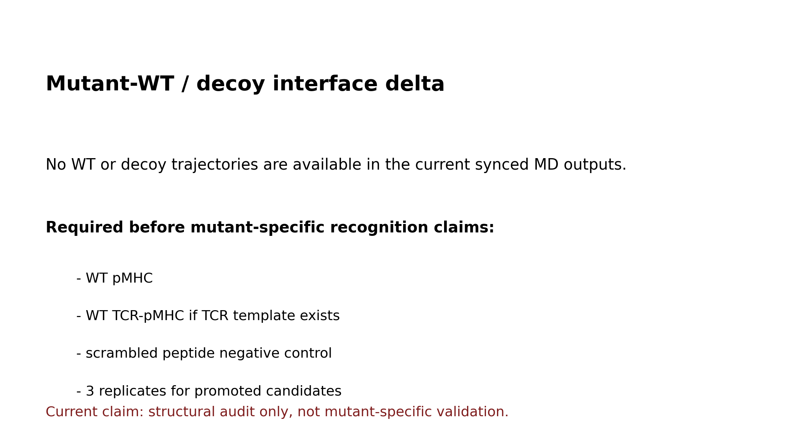
fig_md5_mutant_wt_interface_delta
PNG{kind=link}

fig_md6_replicate_consistency
PNG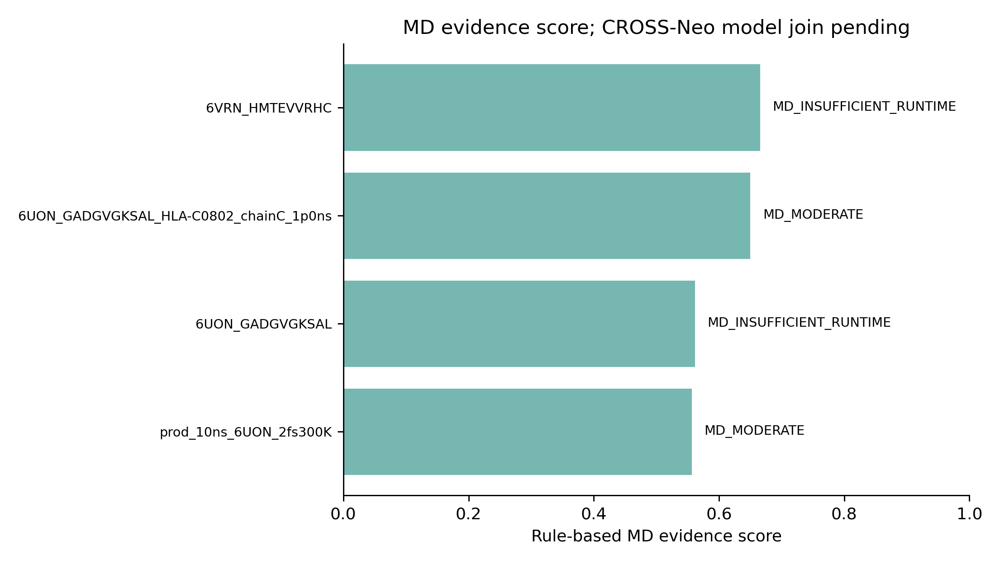
fig_md7_model_md_agreement
PNG{kind=link}
fig_md8_claim_boundary
PNG{kind=link}

fig_md9_live_progress_temperature
PNGSource Paths
/home/seungho/personal/THCA_data_analysis/project/results/cross_neo_md_audit_2026_05_10